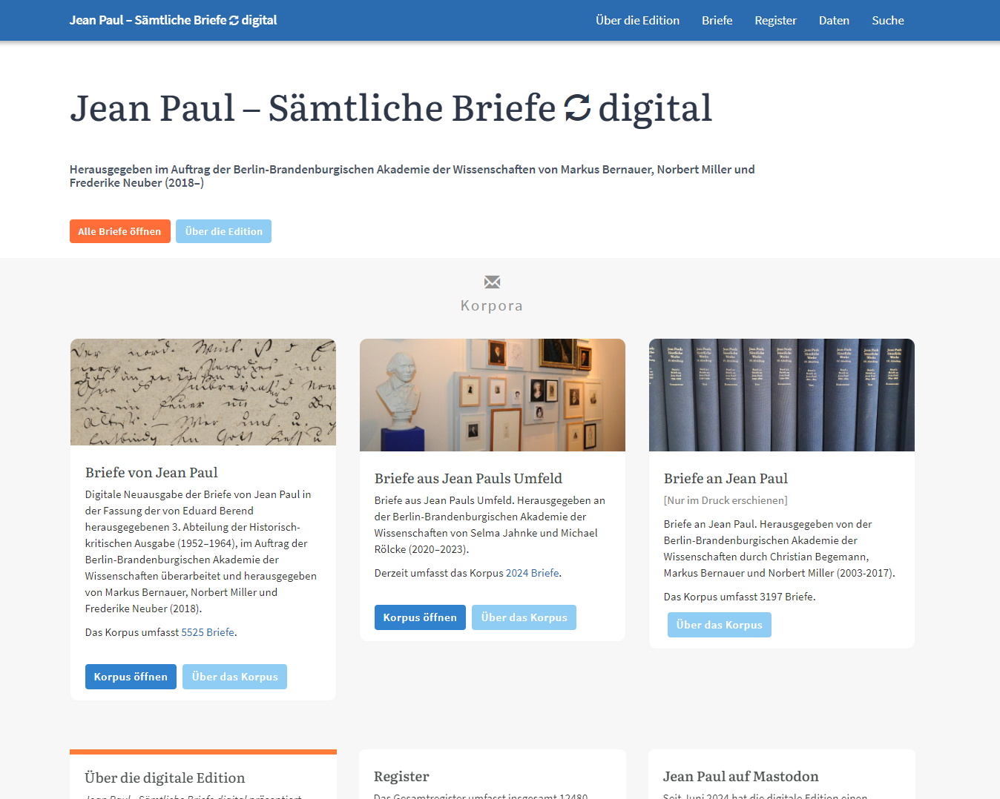
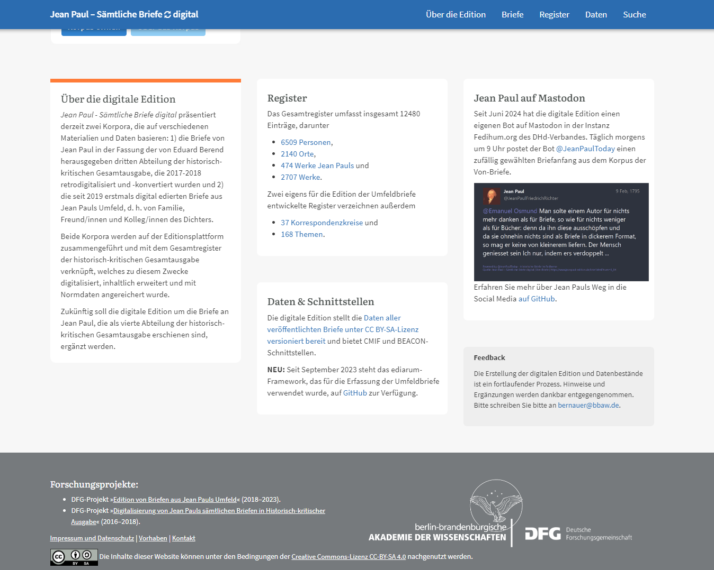
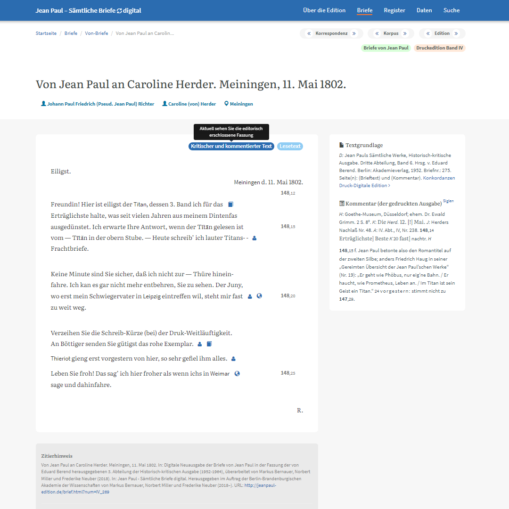
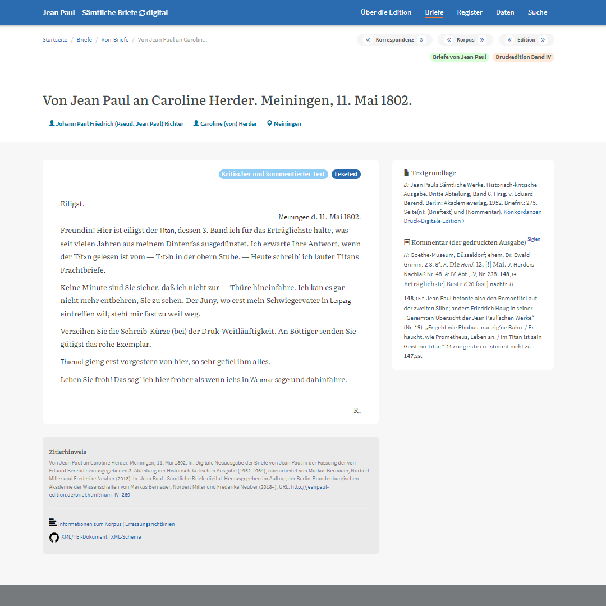
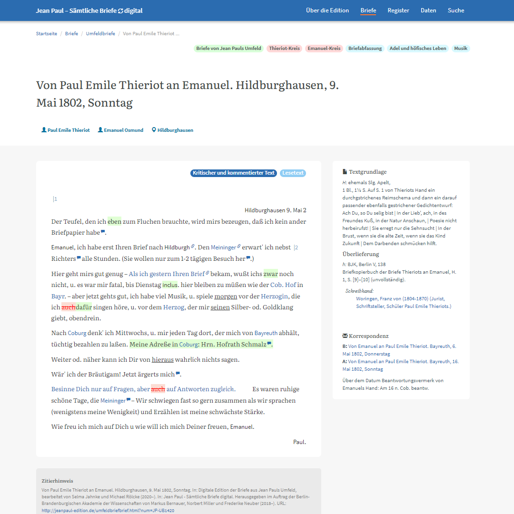
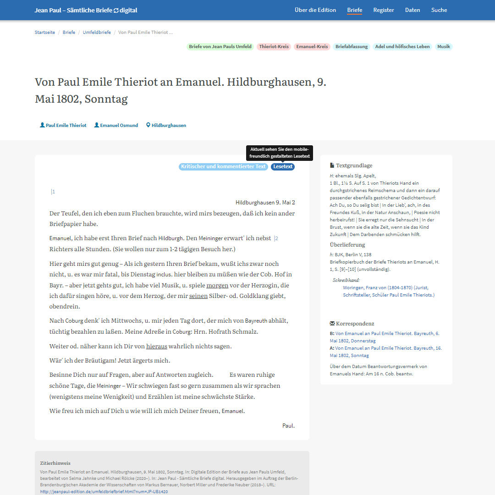
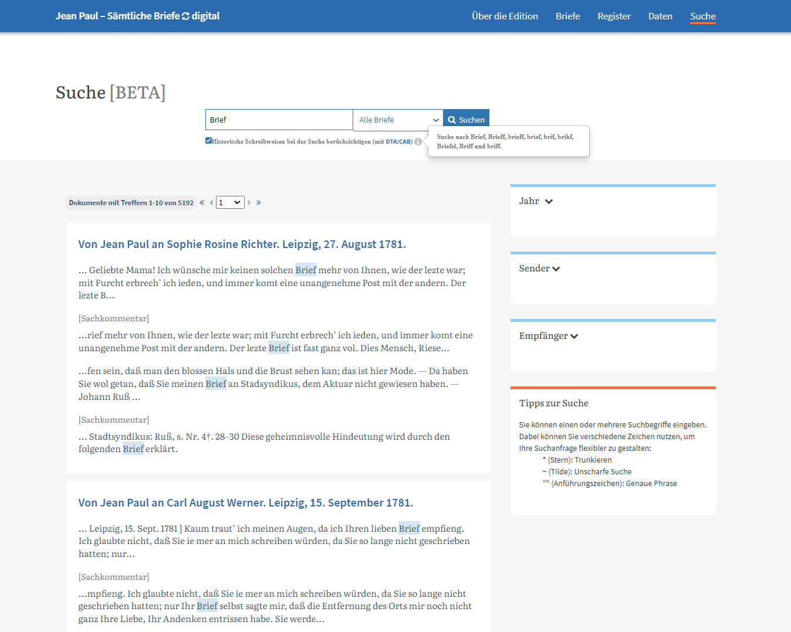
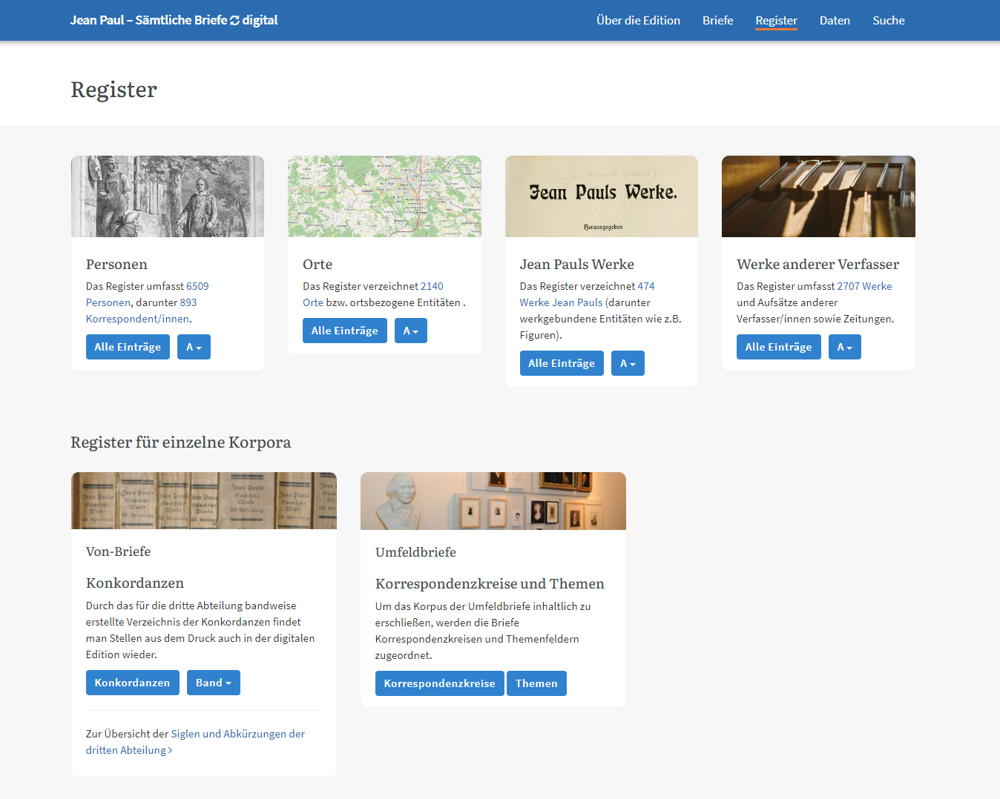

Jean Paul – Sämtliche Briefe digital
Table of Contents
Abstract
This paper reviews the digital edition Jean Paul – Sämtliche Briefe digital, which presents the complete correspondence of the German poet Johann Paul Friedrich Richter (1763–1825). Commissioned by the Berlin-Brandenburg Academy of Sciences and Humanities, the edition features three distinct projects: the letters written by Jean Paul, the letters addressed to him, and the letters from his closest family, friends, and colleagues. Each project has different origins—such as the historical-critical edition of Jean Paul’s works and letters, started by Eduard Berend in the mid-1920s—as well as varying editors, funding sources, methodologies, and goals. Currently, letters from the first and last projects have been transcribed, and the platform provides free full-text access to them. Additionally, data from all projects are linked to a comprehensive index for easy searching and connected to external tools that enhance text analysis and visualization. Future updates will complete the digital edition by including the letters addressed to Jean Paul, which are currently available only in printed form. The edition strives to unify this broad and diverse material within a single platform, not merely placing the individual projects side by side but integrating them into a cohesive whole—without compromising usability. While this has largely been successful, methodological differences between the projects pose challenges for the user experience. These difficulties are further compounded by the occasionally cumbersome presentation of secondary information, which can hinder both accessibility and ease of use.
Einleitung
Mit diesen Worten, die der deutsche Schriftsteller Johann Paul Friedrich Richter (1763–1825), oder – wie er sich selbst nannte – Jean Paul, einst an seinen Freund und Förderer Erhard Vogel richtete, kann der Einstieg in die digitale Edition seiner Briefe treffend umschrieben werden. Denn die schier endlose Fülle an Dokumenten und Themen, die der Wahl-Bayreuther zeit seines Lebens zu Papier brachte, spiegelt sich gleichermaßen in der Herausforderung wider, eine vollständige digitale Sammlung seiner Korrespondenzen bieten zu wollen. Umso erfreulicher ist es daher, dass im Falle des hier nun rezensierten Vorhabens Jean Paul – Sämtliche Briefe digital von Langeweile keine Rede sein kann.Aller Anfang ist schwer. Mir wird es wenigstens der Anfang eines Briefs, zu dessen Anfüllung sich hundert Materien anbieten, bei denen die Auswal so schwer und die Unordnung und Weitläuftigkeit so unvermeidlich ist. Vergeben Sie mir also meine Langweiligkeit, noch eh’ Sie sie empfinden.
Das Unterfangen folgt einer traditionsreichen Linie: Bereits in den 1920er-Jahren legte Eduard Berend (1883–1973) im Auftrag der damaligen Preußischen Akademie der Wissenschaften den Grundstein für eine bis heute maßgebliche historisch-kritische Gesamtausgabe der Werke und Briefe Jean Pauls – und das unter den denkbar widrigsten Bedingungen. So setzte er trotz Berufsverbots, Internierung und anschließender Emigration die Arbeit ab 1939 zunächst im Schweizer Exil und ab 1957 wieder in Deutschland fort. Hier, in Marbach am Neckar, sollte seine im Dienste der Sache verrichtete Arbeit schließlich bis zu seinem Tod im September 1973 andauern (Hunfeld 2011), ehe sie durch andere fortgeführt wurde, zunächst mit der Arbeit an den noch verbleibenden, von Berend bereits vorbereiteten Bänden des Jean-Paul-Nachlasses, nicht jedoch an den Briefen. Dazu sei angemerkt, dass der „Begründer der Jean-Paul-Philologie“ bereits zu seinen Lebzeiten zwischen 1952 und 1964 die vom Dichter selbst versandten Briefe in neun Bänden herausgegeben hatte (Knickmann 2000, 176), womit einzig noch die bis dahin nur in Regesten aufgeführten Briefe an Jean Paul fehlten. Zur Schließung dieser Lücke wurde auf Empfehlung des Wissenschaftsrats eine Arbeitsstelle gegründet, die ihre Tätigkeit zu Beginn des Jahres 1992 aufnahm und seit 1994 an der Berlin-Brandenburgischen Akademie der Wissenschaften (BBAW) angesiedelt ist (BBAW 2020e). Die hier herausgegebene Edition wurde 2017 abgeschlossen und vollendete damit nach gut 90 Jahren das von Berend begonnene Vorhaben in vier Abteilungen:
- I. Abteilung: Umfasst die zu Lebzeiten des Dichters veröffentlichten Werke und wurde im Carl Hanser Verlag veröffentlicht.
- II. Abteilung: Enthält den Nachlass und erschien beim Verlag Hermann Böhlaus Nachfolger.
- III. Abteilung: Beinhaltet die Briefe von Jean Paul und wurde im Akademie-Verlag veröffentlicht.
- IV. Abteilung: Umfasst die Briefe an Jean Paul und erschien zunächst im Akademie-Verlag sowie nach der Übernahme desselben bei De Gruyter.
Jean Paul – Sämtliche Briefe digital baut nunmehr auf der grundlegenden Arbeit von Berend auf, indem die traditionelle Druckausgabe in ein digitales Format überführt wird. Diese digitale Edition, die eher als Editionsplattform verstanden werden sollte – und auch verstanden werden will – bietet jedoch mehr als eine bloße digitale Reproduktion des bestehenden Materials. Sie fungiert als dynamischer Raum, in dem sowohl bereits vorhandene als auch neue Inhalte zusammenkommen. Dies wird nicht zuletzt, wenn nicht sogar vordergründig, durch die Integration von Briefen von dem Dichter vertrauten Zeitgenossinnen und Zeitgenossen deutlich, die als quasi ‚Sonderabteilung‘ der digitalen Gesamtausgabe seiner Briefe eine gänzlich neue Dimension verleihen.
Die Absicht des Folgenden besteht nun darin, zu untersuchen, inwieweit die Plattform den Spezifikationen für wissenschaftliche digitale Ausgaben entspricht. Repräsentativ orientiert sich die Arbeit an dem von Sahle et al. (2014) erarbeiteten Kriterienkatalog zur Bewertung von digitalen (wissenschaftlichen) Editionen, wobei sich der Rezensent durchaus bewusst ist, dass es neben solch allgemeinen (Sahle 2016) auch noch spezifischere Kriterien (Stadler 2014) gibt. Da sich die Besprechung jedoch hauptsächlich auf die digitale Präsentation der Edition konzentriert, ohne im Detail auf einzelne Briefe oder Inhaltsbestandteile einzugehen, erschien es sinnvoll, einen breiteren Maßstab für die Bewertung anzulegen. Entsprechend werden zunächst die gebotenen Inhalte und Leistungen thematisiert, bevor anschließend der Reihe nach die verfolgten Ziele und methodischen Arbeitsweisen, die (technische) Umsetzung und Präsentation sowie zuletzt die Soziabilität und Nutzbarkeit der Editionsplattform diskutiert werden.
Drei Projekte, eine Plattform
Auf der Plattform Jean Paul – Sämtliche Briefe digital sind momentan drei Editionsprojekte vorzufinden, welche jeweils auf unterschiedlichen Materialien und Daten basieren. Diese behandeln:
- Die ‚Briefe von Jean Paul‘, die der III. Abteilung von Berends historisch-kritischer Ausgabe entstammen.1
- Die Korrespondenzen von Jean Pauls Familie, Freunden und Kollegen, erstmals 2019 ediert, einschließlich bisher unveröffentlichter Teile seiner Korrespondenz.
- Die ‚Briefe an Jean Paul‘, veröffentlicht in der IV. Abteilung der historisch-kritischen Ausgabe zwischen 2003 und 2017.2
Alle drei Projekte sollen perspektivisch auf der Editionsplattform zusammengeführt und zugleich mit dem Gesamtregister der Berend’schen Ausgabe verknüpft werden, das zu diesem Zweck digitalisiert, inhaltlich erweitert und mit Normdaten angereichert wurde (Bernauer, Miller und Neuber 2018). Verantwortlich für das Vorhaben in seiner Gesamtheit ist dabei, wie schon in der Vergangenheit, die BBAW, wobei Norbert Miller, Markus Bernauer und Friederike Neuber als Herausgebende auftreten. Was die personelle Ausstattung darüber hinaus betrifft, so finden sich auf den Seiten der Plattform verschiedene Angaben – ein sich nahezu automatisch ergebender Umstand, wenn man bedenkt, dass jedes der drei oben genannten Projekte durch teils unterschiedliche Verantwortlichkeiten, Förderungen und Projektphasen gekennzeichnet ist.3
Da auf der Plattform selbst leider keine konsolidierende Übersicht vorhanden ist, soll mit der folgenden Tabelle der Versuch unternommen werden, eine Zusammenstellung aller auffindbaren Informationen zu bieten (siehe Tabelle 1):
| Projekt | Leitung | Hrsg. von | Digitale Konzeption | Weitere Beteiligte4 | Zeitrahmen | Gefördert durch |
|---|---|---|---|---|---|---|
| Digitalisierung von Jean Pauls sämtlichen Briefen in Historisch-kritischer Ausgabe | --- | Markus Bernauer, Norbert Miller, Frederike Neuber | Frederike Neuber | Matthias Boenig, Marlene Compton Alexander Czmiel, Stefan Dumont, Nadine Jakob, Lou Klappenbach, Markus Schnöpf, Angela Steinsiek | 2016–2018 | Deutsche Forschungsgemeinschaft |
| Digitale Edition von Briefen aus Jean Pauls Umfeld | Markus Bernauer | Selma Jahnke, Michael Rölcke | Frederike Neuber, Axelle Lecroq | Dürten Hartmann, Leon Kumpfmüller, Philipp Linß, Jutta Moldenhauer, Pauline Thielert | 2018/2019–2023/2024 | Deutsche Forschungsgemeinschaft |
| Edition der Briefe an Jean Paul (bisher nur im Druck erschienen) | Christian Begemann, Markus Bernauer, Norbert Miller | Christian Begemann, Markus Bernauer, Norbert Miller | --- | --- | 1992–2016 | Akademienprogramm mit Mitteln des Bundes und des Landes Brandenburg (1992–2006); Oberfrankenstiftung in Bayreuth, ergänzt durch Mittel der Bayerischen Landesstiftung (2008–2012); Fritz Thyssen Stiftung sowie Otto Wolff-Stiftung (2010–2014); Oberfrankenstiftung, Gerda Henkel Stiftung, Otto Wolff-Stiftung sowie Stiftung Preußische Seehandlung (2015–2016) |
Neben der BBAW war es insbesondere die Deutsche Forschungsgemeinschaft (DFG), welche in einer ersten Phase von 2016 bis 2018 die Digitalisierung der ‚Briefe von Jean Paul‘ und damit zugleich die gesamte Editionsplattform förderte (Grötschel o. D.). Dadurch konnte das Projekt seit 2018 als Open-Access-Edition in einer kontinuierlich aktualisierten digitalen Form bereitgestellt werden. Für den Zeitraum von 2018/2019 bis Ende 2023/2024 – die genauen Jahreszahlen variieren5 – wurden erfolgreich weitere Mittel eingeworben, um das Korpus der ‚Briefe aus Jean Pauls Umfeld‘ aufzunehmen und die Edition umfassend weiterzuentwickeln (Miller o. D.). Die Einwerbung einer dritten Förderphase zur Integration des Korpus der ‚Briefe an Jean Paul‘ ist derzeit in Vorbereitung.
Inhalte
 
Sowohl die ‚Von-‘ als auch die ‚Umfeld-Briefe‘ sind vollständig im Volltext verfügbar und gemäß dem TEI-P5-Standard in XML erfasst, einschließlich ihrer zugehörigen Metadaten. Im Gegensatz dazu sind die ‚An-Briefe‘, wie oben erwähnt, bislang ausschließlich durch ihre Metadaten eingebunden. Die Daten sämtlicher Briefe können über Schnittstellen im Correspondence Metadata Interchange (CMI)- und BEACON-Format abgerufen werden.6 Die Identifikation von Absender und Empfänger erfolgt überwiegend über IDs der Gemeinsamen Normdatei (GND) sowie vereinzelt über das Virtual International Authority File (VIAF) (BBAW 2020b).
Neben den titelgebenden Briefen finden sich auf Jean Paul – Sämtliche Briefe digital ebenfalls 12.480 Registereinträge, die derzeit 6.509 Personen, 2.140 Orte und 474 Werke von Jean Paul sowie 2.707 Werke anderer Autoren umfassen. Zwei weitere Register, die speziell für das Korpus der ‚Umfeld-Briefe‘ konzipiert wurden, verzeichnen darüber hinaus 168 Einträge zu Themen, die in den ‚Umfeld-Briefen‘ angesprochen werden, sowie 37 Korrespondenzkreise, in denen diese verhandelt werden (Abb. 2; BBAW 2020c).
Keines der bereits in die Editionsplattform eingebundenen Projekte verfügt über digitale Faksimiles der Handschriften. Dieser Mangel wird jedoch von den Herausgebenden direkt angesprochen und begründet, wenn auch nur an eher unscheinbarer Stelle. So wird in den allgemeinen Vorbemerkungen der ‚Von-Briefe‘ angegeben, der Grund hierfür sei, dass „weder die finanziellen Mittel [des Projekts] noch die […] nach wie vor unklare rechtliche Lage“ eine leicht zu handhabende Einbindung erlaubt hätten (Bernauer, Miller und Neuber 2018). Da keines der Projekte jedoch Auskunft über die genaue Höhe der Zuschüsse sowie deren Verteilung gibt, ist gerade das erste Argument nicht wirklich objektiv zu beurteilen. Unabhängig davon erscheint es angesichts des gewachsenen Umfangs der Edition sinnvoll, einen solchen Hinweis an prominenterer Stelle zu platzieren, um die Aussage auf die gesamte Plattform zu beziehen. Allein für das Projekt der ‚Von-Briefe‘ kann überdies festgestellt werden, dass in den oben genannten Vorbemerkungen ebenso auf die Seiten des Deutschen Textarchivs (DTA) verlinkt wird (Bernauer, Miller und Neuber 2018), wo die digitalen Faksimiles aller Bände der III. Abteilung frei zugänglich sind.7
Abgesehen von illustrativen Inhalten (vgl. Abb. 1 und 8) findet sich auf der Plattform nur noch Bildmaterial in Form von drei gescannten Stammbaumschemata (BBAW 2018). Diese wurden im Rahmen des ‚Von-Briefe‘-Projekts digitalisiert und sind für sich genommen kein Ergebnis des digitalen Editionsprojekts. Ebenfalls übernommen wurden die ursprüngliche Reihensystematik sowie die von Berend definierten und in der Druckausgabe verwendeten Sigel und Abkürzungen, jedoch nicht ohne notwendige Anpassungen (BBAW 2018). Ein wesentlicher Beitrag der Edition liegt mithin in der Aktualisierung und Korrektur der Informationen, die in die Metadaten der ‚Von-Briefe‘ eingeflossen sind. Für das erstmals digital aufbereitete Korpus der ‚Umfeld-Briefe‘ wurden dagegen ausschließlich selbstentwickelte Richtlinien zur Anwendung gebracht (Jahnke und Rölcke 2021).
Sowohl für das Korpus der ‚Von-Briefe‘ als auch für das Korpus der ‚Umfeld-Briefe‘ werden auf mehreren Webseiten ausführliche Begleittexte bereitgestellt, die die Erstellung und Nutzung der beiden Teilkorpora erläutern (siehe z. B. BBAW 2018; BBAW 2020b; BBAW 2020d; Bernauer 2018; Bernauer, Miller und Neuber 2018; Jahnke und Rölcke 2021).8 Hintergrund und Zukunftspläne der digitalen Editionsplattform werden hingegen auf einer vorgeschalteten Übersichtsseite beschrieben, von der aus eine einfache Navigation zu den einzelnen Inhalten möglich ist (BBAW 2020e). Ebenfalls von hier aus gelangt man zu zwei weiteren Seiten, auf denen eine Auswahl von Publikationen (BBAW 2020f) zu Jean Paul sowie kommende und vergangene Veranstaltungen (BBAW 2020g) vorgestellt werden – beides Inhalte, die als Nebenergebnisse der Plattform und ihrer Bearbeitungsleistung zu verstehen sind.
Adressaten
Die digitale Edition erhebt keinen expliziten Anspruch darauf, für ein bestimmtes Publikum erstellt worden zu sein oder ein bestimmtes Publikum erreichen zu wollen. Vielmehr lässt sich aus dem Gebotenen indirekt ableiten, dass sich die gesamte Plattform an eine breite wissenschaftliche Öffentlichkeit zu richten scheint. Das Erreichen eines nicht-wissenschaftlichen Publikums wird indessen nicht explizit ausgeschlossen, erscheint jedoch im Hinblick auf den Inhalt und die Struktur der Edition eher unwahrscheinlich. Hierfür spricht ebenso die Tatsache, dass die Plattform in der Tradition einer ‚historisch-kritischen Gesamtausgabe‘ steht, auch wenn sie sich selbst nicht als ‚Neuauflage‘, sondern zu Recht als partielle ‚digitale Neuausgabe‘ klassifiziert (Bernauer, Miller und Neuber 2018). Dies suggeriert zwar eine gewisse Abweichung von der Druckvorlage – sowohl hinsichtlich der Veröffentlichungsart als auch des eigentlichen Inhalts – bringt jedoch fast zwangsläufig das Festhalten an den bereits im Druck gesetzten wissenschaftlichen Standards mit sich.
Ziele
Für jedes der drei Projekte, die in die digitale Editionsplattform einbezogen sind, wurden seitens der Herausgebenden spezifische Ziele festgeschrieben. So zielt die Konzeption der neuen digitalen Ausgabe der ‚Briefe von Jean Paul‘ laut Neuber darauf ab, „die einzelnen Briefe […] aus der Buchstruktur der Berend’schen Edition herauszulösen, […] [mit der Absicht,] Leserinnen und Lesern [hierdurch] neue Zugänge für Lektüre und Recherche zu ermöglichen“ (Neuber 2018). Um dies zu erreichen, wurde beschlossen, die Brieftexte mit den Kommentaren der Printausgabe und den Registern dynamisch zu verknüpfen und mit standardisierten Metadaten anzureichern. Gerade Letzteres wurde angestrebt, um einen vielfältigen Zugriff auf das Korpus der ‚Von-Briefe‘ zu ermöglichen und die digitale Neuausgabe über ihre eigenen Grenzen hinaus mit Web-Ressourcen vernetzbar zu machen (Neuber 2018).
Eine ähnliche, aber dennoch unterschiedliche Intention verfolgt das Projekt der ‚Umfeld-Briefe‘, dessen erklärtes Ziel es ist, die „Multipolarität in den Briefwechseln […] und die systematisch praktizierte indirekte epistolarische Kommunikation an einer Modell-Edition sichtbar zu machen“ (BBAW 2020d). Mithin beabsichtigt das Projekt ebenfalls, „die neuen Möglichkeiten digitaler Editionen [zu] nutzen“, um die Briefe im Volltext bereitzustellen, durch Register zu erschließen und sie zumindest in ihren Grundzügen zu erläutern (BBAW 2020d).9 Denn: Analog zu den ‚Briefen von Jean Paul‘ ließen auch die editorischen Richtlinien der vorangegangenen Druckausgaben keine Wiedergabe der (indirekten) Kommunikation innerhalb des Richter’schen Familienkreises zu. Dieser bislang gänzlich fehlende Teil unvollständig publizierter Briefe soll mit seiner Edition in das historisch-kritische Gesamtprojekt integriert werden, indem das einst gesammelte Material zur Kommentierung der ‚Von-‘ und ‚An-Briefe‘ nun in eine gleichwertige, zusätzliche Abteilung überführt wird (BBAW 2020d). Selbst gesteckte Erkenntnisziele, die die Durchführung dieses Vorhabens als notwendig erscheinen lassen, finden sich dabei mit der Überlegung, ob die heutige Nutzung sozialer Netzwerke möglicherweise nicht nur einen früheren, bis ins 19. Jahrhundert verbreiteten Zustand erneuert hat, in dem Briefe als semiöffentliche Kommunikationsform dienten und selbst intime Inhalte häufig einem größeren Publikum zugänglich gemacht wurden (BBAW 2020d).
Komplementierend zu den oben genannten Projekten plant man, die bisher ausschließlich in neun Druckbänden veröffentlichte IV. Abteilung der Gesamtausgabe der ‚Briefe an Jean Paul‘ in die digitale Briefplattform zu integrieren. Ebenso wie die Korpora der ‚Von-‘ und ‚Umfeld-Briefe‘ sollen damit auch die ‚An-Briefe‘, welche derzeit in 8.736 Metadatensätzen über den Webservice correspSearch (Dumont et al. 2024) der BBAW in die digitale Edition eingebunden sind, vollumfänglich zugänglich gemacht werden (BBAW 2020a).
Editionspraxis und Briefzugang
Wie bereits erwähnt unterscheiden sich die editorischen Vorgehensweisen der einzelnen Projekte nicht zuletzt dadurch, dass sie auf unterschiedlichen Ausgangsmaterialien basieren. Diese Unterschiede spiegeln sich auch in den jeweiligen Erfassungsrichtlinien wider. So orientieren sich die Richtlinien der ‚Von-Briefe‘ weitgehend an den Vorgaben der Berend’schen Druckausgabe und wurden nur geringfügig angepasst (BBAW 2018). Die Aktualisierungen seitens der Herausgebenden beschränken sich dabei auf die Metadaten, insbesondere die zuvor uneinheitlichen Angaben zu den Adressaten und Adressatinnen, die ergänzt und systematisiert wurden, sowie die Angaben zu den die Briefe bewahrenden Einrichtungen (Bernauer, Miller und Neuber 2018). Im Gegensatz dazu wurden die Richtlinien für die Edition der ‚Briefe aus dem Umfeld Jean Pauls‘ von Anfang an digital entwickelt, was sich besonders im Datenmodell und der damit verbundenen Darstellung auf der Plattform zeigt (Jahnke und Rölcke 2021). Was das noch ausstehende Korpus der ‚An-Briefe‘ betrifft, kann unterdessen angenommen werden, dass die Edition auf ähnliche Weise wie bei den ‚Von-Briefen‘ erfolgen wird.
Für den Zugang zu einem einzelnen Brief auf der Plattform stehen den Nutzerinnen und Nutzern mehrere Optionen zur Verfügung. Die vielleicht auffälligste Möglichkeit befindet sich auf der Startseite, wo für die drei Korpora jeweils zwei Buttons mit den Beschriftungen „Korpus öffnen“ und „Über das Korpus“ angeboten werden (vgl. Abb. 1). Eine Ausnahme bildet das Korpus der noch zu integrierenden ‚An-Briefe‘, bei dem der Button „Korpus öffnen“ entsprechend noch fehlt. Ein Klick auf einen der Buttons führt zu einer Auflistung aller 7.548 Briefe, wobei die Filterfunktion automatisch auf das jeweilige Korpus eingestellt ist, dessen Button zuvor angeklickt wurde.10 Unabhängig von der Zugangsart können innerhalb dieser Liste alle Briefe durch diesen und andere Filter11 durchsucht werden. Hat man den gewünschten Brief gefunden, genügt ein weiterer Klick, um zur jeweiligen Einzelansicht zu gelangen.
Grafische Benutzeroberfläche
Die unterschiedlichen Vorgehensweisen der Projekte bei der
Editionsarbeit führen zu variierenden Details in der Erschließung der Briefe, was
wiederum Unterschiede in deren Darstellung zur Folge hat. Im Folgenden werden
diese Unterschiede erläutert und sowohl die Gemeinsamkeiten als auch die
spezifischen Merkmale bei der Behandlung der ‚Von-‘ und der ‚Umfeld-Briefe‘
herausgestellt. Zur besseren Vergleichbarkeit wird die grafische
Benutzeroberfläche, über die die Dokumente bereitgestellt werden, dabei von oben
nach unten besprochen.  
Scrollt man in der Ansicht eines Briefs zunächst nach oben, so findet
man nur im Korpus der ‚Von-Briefe‘ direkt unter der Navigationsleiste drei
horizontale Balken. Diese sind grau hinterlegt und mit Pfeilsymbolen versehen, die
nach rechts und links weisen (Abb. 3 und
4). Sie dienen der Navigation im
chronologisch geordneten Bestand der ‚Briefe von Jean Paul‘ und ermöglichen das
Blättern zum nächsten oder vorherigen Brief, wobei man die Wahl zwischen
„Korrespondenz“, „Korpus“ und „Edition“ hat. Folglich bleibt es den Nutzerinnen
und Nutzern überlassen, ob sie ein Schreiben im Kontext der ursprünglichen
Korrespondenz oder im Hinblick auf seine allgemeine Einordnung im Projekt
betrachten möchten.12
 
Unmittelbar unter den Balken bieten Schaltflächen eine zusätzliche Orientierungshilfe. Diese farblich voneinander abgesetzten Buttons sind sowohl bei den ‚Von-Briefen‘ als auch bei den ‚Umfeld-Briefen‘ zu finden. Während in der Ansicht der ‚Von-Briefe‘ ein orangefarbener Button über den spezifischen Band der Druckausgabe informiert (Abb. 3 und 4), aus dem ein Brief stammt, verweisen bei den ‚Umfeld-Briefen‘ rote Schaltflächen auf die jeweiligen Korrespondenzkreise, während blaue Schaltflächen die thematischen Schlagwörter anzeigen (Abb. 5 und 6). In beiden Fällen gibt ein grüner Button Auskunft über das jeweilige Korpus, in dem man sich befindet.
Unterhalb des soeben Beschriebenen befindet sich der jeweilige Titel eines Briefes, der durch seine Position und Größe hervorsticht. Er setzt sich stets aus den Namen der korrespondierenden Personen, dem Abfassungsort sowie dem Datum der Beschriftung (bei den ‚Umfeld-Briefen‘ einschließlich des Wochentages) zusammen.13 Auf nicht gesicherte Angaben folgt ein Fragezeichen in runden Klammern. Unter dem Titel werden die jeweiligen Briefentitäten – also die Verfasserin oder der Verfasser, die Empfängerin oder der Empfänger, der Schreibort sowie ggf. nachweisbare oder vermutete Mitleserinnen und/oder Mitleser eines Briefes – separat durch einzelne Schaltflächen aufgeführt. Diese sind jeweils mit einem Link zum entsprechenden Registereintrag versehen und ändern beim Überfahren mit der Maus ihre Farbe. Zur besseren Orientierung werden erläuternde Informationen in einem Tooltip eingeblendet.
Vor dem eigentlichen Inhalt eines Briefes befinden sich sowohl bei den ‚Von-‘ als auch bei den ‚Umfeld-Briefen‘ zwei blaue Schaltflächen mit den Beschriftungen „Kritischer und kommentierter Text“ und „Lesetext“, mittels derer zwischen selbigen hin und her geschaltet werden kann. Auch hier werden beim Überfahren mit der Maus entsprechende Erläuterungen in Form eines Tooltips angezeigt (Abb. 3 und 6).
Den größten Teil der Ansicht nimmt erwartungsgemäß der kritisch kommentierte Briefinhalt ein, der stets rein textuell – also ohne beigefügtes Faksimile – präsentiert wird. Standardmäßig wird er diplomatisch getreu der Vorlage wiedergegeben, wobei die unterschiedlich großen Abstände zwischen Brieftext und Grußformeln, sogenannte Devotionsabstände, nicht berücksichtigt werden. Lediglich im Korpus der ‚Umfeld-Briefe‘ werden originale Zeilenumbrüche beachtet (Jahnke und Rölcke 2021). Die Markierung von Seitenumbrüchen wird je nach Ausgangsmaterial der Projekte unterschiedlich gehandhabt: Im Korpus der ‚Umfeld-Briefe‘ wird ein senkrechter Strich samt Ziffer verwendet, um Seiten innerhalb eines Originals zu kennzeichnen (Abb. 5 und 6). Bei den ‚Von-Briefen‘, die auf der Druckvorlage von Berend basieren, wird die Seitenzahl hingegen in einem rechts neben dem Brieftext platzierten Hinweis angegeben (Abb. 3 und 4). Betrachtet man beide Vorgehensweisen – insbesondere aber die des ‚Umfeld-Briefe‘-Projekts – ist nicht direkt eindeutig, ob es sich um die Vorder- oder Rückseite eines Dokuments handelt, was besonders bei mehrseitigen Briefen mit eventuellen Leerseiten problematisch sein dürfte.
Der wohl auffälligste Unterschied in der Editionspraxis zeigt sich im Brieftext selbst: Denn anders als bei den ‚Von-Briefen‘, in denen die textkritischen Anmerkungen nicht in den Text integriert wurden, sondern getrennt davon am rechten Rand stehen,14 können im Korpus der ‚Umfeld-Briefe‘ verschiedene farbige Markierungen entdeckt werden (Abb. 5). Diese ihrerseits weisen auf Stellen hin, an denen Korrekturen vorgenommen wurden: Einfügungen sind grün markiert, Streichungen rot und ursprüngliche Randnotizen violett. Unsicherheiten bezüglich der Richtigkeit der am besten bezeugten Lesart werden gelb, nicht länger entzifferbare Passagen grau und beschädigte oder verlorene Textstellen, die nicht rekonstruiert werden konnten, orange markiert (Jahnke und Rölcke 2021).
Gemein ist beiden Projekten die Verwendung von Symbolen. Im Projekt der ‚Umfeld-Briefe‘ treten diese in Form von kleinen Sprechblasen oder ineinander verschlungenen Kettengliedern auf, um Stellenkommentare bzw. Verbindungen zu anderen im Brieftext erwähnten Briefen anzuzeigen. Namen, Orte, Werke von Jean Paul sowie Fremdwerke erscheinen ohne Symbol, dafür aber in blauer Farbe (Jahnke und Rölcke 2021). Im Korpus der ‚Von-Briefe‘ finden sich ebenfalls Sprechblasen, jedoch keine Kettenglieder-Symbole. Zudem sind hier blaue Symbole für Personen, Werke und Orte zu sehen (Abb. 3). Alle Kommentare und Links zu den jeweiligen Registern oder zu anderen Briefen sind in beiden Korpora stets nur im kritischen, nicht aber im Lesetext verfügbar.
Zitation
Für jeden in der digitalen Edition zugänglich gemachten Brief wird am Ende einer Webseite ein individueller Zitierhinweis gegeben (Abb. 4), der neben den bibliografischen Angaben stets mit einer stabilen URL abschließt.15 Daneben wird auf das zugehörige XML/TEI-Dokument verlinkt. Ein separater Link führt zum entsprechenden XML-Schema.16 Weiterhin gibt es Verlinkungen zu Informationen über das Korpus, in dem sich das Dokument befindet, sowie zu den vom jeweiligen Projekt definierten Richtlinien zur Erfassung der einzelnen Briefzeugnisse.
Umsetzung und Präsentation
Design und Struktur
Dank ihres einfachen und grafisch minimalistischen Designs ist die Oberfläche der Edition intuitiv zu bedienen.17 So wird bereits beim Aufruf der Startseite ein kurzer Überblick über Anliegen und Umfang des Vorhabens gegeben (Abb. 1), wobei die wichtigsten Informationen wie gewohnt zusammengefasst sind. Überdacht wird die Webpräsenz von einer horizontalen Navigationsleiste mit fünf Reitern („Über die Edition“, „Briefe“, „Register“, „Daten“, „Suche“), die jeweils eine Verbindung zu einem zentralen Bereich darstellen und jederzeit zugreifbar sind, da sie sich beim Scrollen durch alle Seiten mitbewegen. Ebenfalls über sämtliche Seiten hinweg konstant ist die Fußzeile, die neben verschiedenen weiteren Informationen auch die dort zu erwartenden Links zum Impressum, zum Datenschutz, zu Kontaktinformationen sowie zu den Nutzungsbedingungen enthält (Abb. 2).
Die restliche Seitenstruktur entspricht den derzeit gängigen Standards für die Gestaltung von User-Interfaces digitaler Editionen und verzichtet daher wohl sicher im Sinne der Responsivität bewusst auf per Mouseover-Funktion ausklappbare Menüleisten. Die fast universelle Verwendung von Breadcrumbs sorgt dafür, dass Nutzerinnen und Nutzer immer wissen, wo sie sich auf der Plattform befinden. Ein responsives Webdesign sorgt zudem dafür, dass sämtliche Haupt- und Unterseiten sowohl auf dem Desktop als auch auf mobilen Endgeräten ohne technische Probleme bedient werden können.18
Bedauerlich ist unterdessen der Verzicht auf eine Sprachauswahl, weshalb die gesamte Oberfläche der Plattform nur auf Deutsch genutzt werden kann. Ob in Zukunft eine englischsprachige Fassung zur Verfügung gestellt werden soll, wird bisher weder erwähnt noch angedeutet – wobei jedoch auch keineswegs klar sein dürfte, ob hierfür Bedarf besteht. Ebenso bedauerlich ist, dass sich in den für die Edition erstellten Begleittexten vereinzelte Rechtschreib- und Tippfehler finden,19 wobei auch Uneinheitlichkeiten bei der Umsetzung einer geschlechtergerechten Sprache ins Auge fallen. Bei der übrigen Darstellung fällt auf, dass die Schriftgrößen der Brief- und Begleittexte voneinander abweichen und insbesondere letztere etwas zu klein geraten sind. Eine Möglichkeit, dies selbst zu ändern, gibt es in der Plattform nicht, sodass im besten Fall die Vergrößerungsfunktion des Browsers zur Anpassung verwendet werden kann.
Suche

Die Gesamtzahl der Suchergebnisse sowie die einzelnen Treffer werden unterhalb der Suchleiste angezeigt. Wenn mehrere Treffer in einem Dokument vorkommen, werden diese dem jeweiligen Schreiben zugeordnet. Diese Zuordnung erfolgt durch farblich abgesetzte Kästen, in denen die Treffer zusammen mit ihrem Kontext in einer übersichtlichen Ansicht dargestellt werden. Ein Klick auf den entsprechenden Kasten ermöglicht es, das vollständige Dokument bequem aufzurufen. Rechts neben den Suchergebnissen finden sich zudem separate Boxen, die bei Bedarf einen schnellen Überblick über die in den Treffern vorkommenden Jahre, Absender und Absenderinnen und Empfänger und Empfängerinnen bieten (Abb. 7) und als Filter der Suchergebnisse dienen. Vermisst wird hingegen die Möglichkeit, bevorzugte Suchergebnisse zu speichern und somit leichter wiederzufinden.22 Auch wäre es wünschenswert, dass beim Klick auf einen Kasten das Dokument in einem neuen Tab geöffnet wird – beides Funktion, die nach dem Ende des Beta-Status eine sinnvolle Ergänzung darstellen würden.
Register

Von dem Beschriebenen zu unterscheiden sind an dieser Stelle die ‚Register für einzelne Korpora‘, bestehend aus den ‚Konkordanzen‘ der ‚Von-Briefe‘ und den Verzeichnissen der ‚Korrespondenzkreise‘ und ‚Themen‘ der ‚Umfeld-Briefe‘. Erstere fungieren eher als helfende Vermittler zwischen den verschiedenen Medientypen denn als Register, indem sie das einfache Auffinden von Stellen aus dem Druck auch in der digitalen Edition – und umgekehrt – erleichtern. Eine Suchoption, die die Eingabe einer bestimmten Briefnummer oder Seitenzahl ermöglicht, sowie eine nach Bandnummer änderbare Filterung unterstützen dies. Die beiden eigens für das Korpus der ‚Umfeld-Briefe‘ angelegten Register bieten dagegen eine tiefgreifende Filterung der einzelnen Einträge.
Technische Architektur
Die technische Umsetzung und langfristige Nutzbarkeit der Editionsplattform wird von der Digitalisierungsinitiative der BBAW, „The Electronic Life Of The Academy“ (TELOTA), verantwortet. Die digitale Konzeption und Entwicklung wurde dabei maßgeblich von Neuber gestaltet und wird seit März 2022 im Rahmen des ‚Umfeld-Briefe‘-Projekts durch Axelle Lecroq unterstützt (Neuber 2018; BBAW 2020b; BBAW 2020d).
Zur technischen Architektur des zuerst auf der Plattform verfügbaren ‚Von-Briefe‘-Projekts äußert sich Neuber wie folgt:
Die digitale Edition wurde unter Verwendung der Software oXygen und PyCharm umgesetzt. Die Edition wird in der XML-Datenbank eXist vorgehalten. Die Daten sind in XML/TEI-kodiert und wurden vorrangig mit X-Technologien (XSLT/XQuery) sowie mit Python transformiert und unter Verwendung von Bootstrap publiziert.
Die Briefe selbst wurden mithilfe eines XML-Datenmodells erfasst, das den P5-Richtlinien der TEI folgt und sich am Basisformat des Deutschen Textarchivs (DTABf) orientiert. Da die Editionspraxis projektabhängig ist, variieren die XML-Schemata, die in RELAX NG formuliert sind. Die editionsphilologische Auszeichnungsdokumentation für jedes Korpus wurde in Form von ODD-Dateien realisiert, die auch im aktuellen Arbeitszustand bereits über GitHub zugänglich sind.25 Bei der Edition der ‚Umfeld-Briefe‘ kam zudem eine spezifisch angepasste Version des von der BBAW entwickelten Editionsframeworks ediarum zum Einsatz (BBAW 2020b).
Sämtliche Daten stehen sowohl als Datensatz im Online-Speicherdienst Zenodo (Neuber und Lecroq 2023) als auch als Datenpaket oder einzelne Dateien in einem eigens erstellten GitHub-Repositorium (Neuber 2018–) zur Verfügung. Ferner ist das gesamte Vorhaben in Form eines Forschungsdatenrepositoriums mit einem DOI in der Registry of Research Data Repositories (re3data.org 2022) gelistet.
Die Versionierung der Daten und die Zitierung einzelner Versionen werden ebenfalls mithilfe von GitHub und Zenodo gewährleistet, wobei beide Dienste eine einfache und transparente Nachverfolgung ermöglichen. Zusätzlich kann die Versionsgeschichte auf der Plattform selbst eingesehen werden (BBAW 2020h). Allerdings scheint die betreffende Webseite schon seit einiger Zeit nicht mehr aktualisiert worden zu sein.
Spin-Offs und Soziabilität
Im Rahmen der laufenden Weiterentwicklung der Plattform zeigt sich die Entstehung von Spin-off-Produkten bisher hauptsächlich durch Datenintegrationen in bestehende Initiativen. Die digitale Edition verweist dabei selbst auf die Integration sämtlicher Briefmetadaten in correspSearch, die Aufnahme von Jean Pauls Briefen als historisches Korpus im Digitalen Wörterbuch der Deutschen Sprache (DWDS, BBAW 2025) sowie die Eingliederung der Korrespondenzen in das D*-Korpus des Zentrums Sprache an der BBAW und den CorpusExplorer (Rüdiger 2018, BBAW 2020b). Das einzige Spin-off, das über Analyse- und Visualisierungszwecke hinausgeht und einen neuen Zugriff auf die Inhalte der Ausgabe bietet, ist die Anbindung der Edition an die sozialen Netzwerke.
Anknüpfend an das im obigen Zitat skizzierte Konzept einer Social Edition verfügte das Vorhaben von Juni 2022 bis Juni 2023 über einen eigenen Twitter-Bot (@jeanpaultoday), der bis zu dreimal am Tag die Anfänge der Briefe von Jean Paul postete. In Anlehnung an das Original auf der Plattform beinhalteten die Tweet-Texte den Brieftitel, einen Link zur Edition sowie die Hashtags #briefgezwitscher, #jeanpaultoday und #jeanpaul. Den eigentlichen Text des Briefes fand man hingegen auf einer angehängten ‚Flashcard‘ im JPG-Format, deren Gestaltung einem echten Tweet nachempfunden war. Mithin entfiel auch der ursprüngliche Briefkopf samt Datumszeile und wurde stattdessen durch die Adressierung an ein fiktives Benutzerkonto sowie die Umwandlung in ein Postingdatum unterhalb des Tweets ersetzt. Im angezeigten Brieftext wurde dabei die vom Kurznachrichtendienst maximal erlaubte Zeichenzahl ausgeschöpft, es sei denn, sehr kurze Briefe führten zu Tweets mit weniger als 280 Zeichen (Neuber 2022–).Using social media allows us to integrate a new stage into the editorial process — a stage that fills the gap between an edition’s initial planning stages and its concluding blind peer review, which capitalizes on the engaged knowledge communities inside and outside the academy.
Nach einer einjährigen Pause wurde das Spin-off im Juni 2024 in Form eines eigenen Bots (@jeanpaultoday) auf Mastodon fortgeführt, und zwar in der Instanz des DHd e.V. (Abb. 2). Die dort geposteten Beiträge erscheinen ähnlich wie oben beschrieben. Neu sind lediglich die verwendeten Hashtags, die nun auf #OnThisDay, #JeanPaulEdition, #JeanPaulToday und #Brief festgelegt sind. Wie schon zuvor werden auch hier die Beiträge basierend auf einer zufälligen Auswahl zur Veröffentlichung bestimmt. Im Gegensatz zu Twitter erscheint auf Mastodon jedoch nur ein Beitrag pro Tag.
Zur Erstellung der Posts in beiden sozialen Netzwerken wurden die Daten aus der digitalen Ausgabe mittels XSLT transformiert. Die so generierten Inhalte wurden unter anderem als XML/TEI-Dateien gespeichert und stehen in einem separaten GitHub-Repositorium zur freien Verfügung (Neuber 2022–). Für die Erstellung der ‚Flashcards‘ auf Twitter und Mastodon wurde eine von Torsten Roeder (@toroe) entwickelte Verarbeitungsroutine verwendet, die von Neuber für diesen Zweck modifiziert wurde. Während für die automatische Veröffentlichung auf Twitter autoChirp (Hermes et al. 2017) genutzt wurde, kommt für die Postings auf Mastodon der Webservice autodone zum Einsatz.
Rechte und Lizenzen
Sämtliche Inhalte der digitalen Editionsplattform und auch die auf Github verfügbaren TEI- und Schemadateien sind unter den Bedingungen der Creative Commons-Lizenz CC BY-SA 4.0 international verfügbar und dürfen bei Interesse nachgenutzt werden (Abb. 2). Konkret bedeutet dies, dass die hier präsentierten und auf das Vorhaben bezogenen Materialien in jedem Medium und Format vervielfältigt und verbreitet werden können, wobei neben dem Aufbau darauf auch Transformationen gestattet sind. Beachtet werden muss lediglich, dass eine Urheber- und Rechteangabe erfolgt und eventuell vorgenommene Änderungen kenntlich gemacht werden. Ebenfalls muss, wenn es zu einer neuerlichen Verwendung der Inhalte kommt, die Weitergabe unter denselben Lizenzbedingungen erfolgen. Eine Nutzung zu kommerziellen Zwecken wird nicht ausgeschlossen.
Schlussbemerkungen
In Summe lässt sich sagen, dass die digitale Editionsplattform Jean Paul – Sämtliche Briefe digital ein sehr umfangreiches und komplexes Vorhaben ist, das zwar noch nicht perfekt, aber dennoch bereits sehr gut gelungen ist. Eine Besprechung gestaltet sich insofern schwierig, als dass es sich im Grunde nicht um ein einzelnes, sondern um mehrere Editionsprojekte handelt, die zu unterschiedlichen Zeiten von verschiedenen Teams und mit methodisch unterschiedlichen Herangehensweisen entstanden sind. Trotz dieser Vielfalt erfüllt die Plattform jedoch zweifellos die Anforderungen einer digitalen Edition, die sowohl theoretischen Ansprüchen gerecht wird als auch für die praktische Forschung von Nutzen ist. Dies gelingt insbesondere durch die gelungene Zusammenführung der heterogenen Bestandteile, die einen Mehrwert jenseits der Einzelprojekte bietet. Die Plattform als Ganzes ist dabei ausreichend dokumentiert, zitierfähig, transparent und inhaltlich überzeugend.
Dem Projekt der ‚Von-Briefe‘ ist es gelungen, potenziellen Nutzerinnen und Nutzern neue Zugänge zu Lese- und Recherchemöglichkeiten zu eröffnen. Möglich wurde dies durch die kostenfreie Online-Bereitstellung aller Brieftexte im Volltext, verbunden mit dem Bemühen, diese in Bezug zur Plattform in ein Netz von Registern einzubinden. Zusätzlich wird durch die Anbindung an externe Initiativen (z. B. CorpusExplorer) die Möglichkeit einer noch effektiveren Text- und Metadatenanalyse sowie Visualisierung eröffnet, was insbesondere die Einbindung in andere Forschungsarbeiten befördern dürfte. Was die editorische Aufbereitung angeht, so zeigt sich, dass die einzelnen Briefe zwar von ihrer gedruckten Vorlage getrennt werden konnten, digitale und analoge Inhalte jedoch eng miteinander verknüpft bleiben. Dies liegt vor allem daran, dass anders als beim Korpus der ‚Umfeld-Briefe‘ keine umfangreiche Neu- bzw. Nachbearbeitung erfolgte, sondern Texte und Kommentare fast vollständig aus dem Druck übernommen und lediglich an das neue Medium angepasst wurden. Mit Blick auf die Filter- und Suchmöglichkeiten (Abb. 8), die Bereitstellung von Lesetext und kritischem Text (Abb. 4 und 5), die nachhaltige Datenhaltung und die nicht-lineare Lesemöglichkeit wäre es jedoch falsch anzunehmen, dass sich dieser Teil der Plattform im Zuge seiner digitalen Transformation nur insofern vom gedruckten Paradigma gelöst hat, als dass er nun über genuin digitale Eigenschaften wie dynamische Referenzstrukturen verfügt.
Auch dem Projekt der ‚Umfeld-Briefe‘ ist es gelungen, sein Ziel, nämlich die Visualisierung von multipolaren Zusammenhängen im vorgelegten Briefwechsel, zu verwirklichen. Erreicht wurde dies durch ein elektronisches Gesamtregister, das neben Personen-, Orts- und Werkverbindungen auch explizit die spezifischen Korrespondenzkreise listet (Abb. 3). Dies sowie die intelligente Nutzung der in digitalen Editionen zur Verfügung stehenden Bedienelemente (z. B. beschriftete Buttons und illustrative Icons) machen es ebenso möglich, die Praxis einer (gezielt) indirekten Kommunikation per Brief unter den Zeitgenossinnen und Zeitgenossen nachzuvollziehen. Vermisst wird hierbei lediglich eine unterstützende Darstellung, etwa in Form eines Netzwerkes, durch welche sich das Ausmaß der Kontakte auch visuell aufzeigen ließe.
Was den aktuellen Arbeitsstand des Vorhabens betrifft, so lässt sich dieser sowohl auf der Startseite als auch anhand der Versionierungs-Historie über GitHub und Zenodo nachvollziehen. Hieraus, wie auch aus den Begleittexten, wird deutlich, dass die Plattform keineswegs vollständig ist. Vielmehr zeigt sich, dass sowohl die Editionsplattform als auch die einzelnen Projekte noch nicht in ihrer finalen Form vorliegen und weiterhin laufend aktualisiert werden. Da dies jedoch klar kommuniziert und die technische Umsetzung umfassend dokumentiert wird, kann hier nicht von einem Nachteil gesprochen werden.26
Im Hinblick auf mögliche Gestaltungs- und Erweiterungsmöglichkeiten, die das Vorhaben in Zukunft bereichern könnten, wäre es denkbar, eine vorherige oder begleitende Einführung in die Person Jean Pauls zu erwägen. Es ist jedoch davon abzuraten, dies ebenfalls in Form von Fließtexten zu tun, da diese Art der Informationsvermittlung – die augenscheinlich derzeit in ausreichendem Maße auf der Plattform vorhanden ist – nicht wirklich griffig erscheint. Um dennoch eine gewisse Komplexität und Raffinesse zu bewahren, sollte stattdessen der Einsatz interaktiver Elemente wie etwa Slideshows sowie Audio- und Videoclips in Betracht gezogen werden. Solche Anpassungen würden nicht nur die bisher begrenzte Multimedialität des Vorhabens verbessern, sondern wären auch ein weiterer Schritt, die digitale Edition, die sich zu Recht als Neuausgabe versteht, weiterzuentwickeln.
Bibliography
- Arnold, Eckhart und Stefan Müller. 2017. „Wie permanent sind Permalinks?“ Informationspraxis 3 (1). https://doi.org/10.11588/ip.2016.2.33483.
- Berlin-Brandenburgische Akademie der Wissenschaften. 2018. „Digitalisierte Inhalte der Druckedition.“ Jean Paul – Sämtliche Briefe digital. https://web.archive.org/web/20240912123734/https://www.jeanpaul-edition.de/von-briefe-material.html.
- Berlin-Brandenburgische Akademie der Wissenschaften. 2020a. „Die Edition der Briefe an Jean Paul (bisher im Druck).“ Jean Paul – Sämtliche Briefe digital. https://web.archive.org/web/20240911204206/https://www.jeanpaul-edition.de/an-briefe.html.
- Berlin-Brandenburgische Akademie der Wissenschaften. 2020b. „Daten und Schnittstellen.“ Jean Paul – Sämtliche Briefe digital. https://web.archive.org/web/20240911223920/https://www.jeanpaul-edition.de/daten.html.
- Berlin-Brandenburgische Akademie der Wissenschaften. 2020c. „Register.“ Jean Paul – Sämtliche Briefe digital. https://web.archive.org/web/20240912122809/https://www.jeanpaul-edition.de/register.html.
- Berlin-Brandenburgische Akademie der Wissenschaften. 2020d. „Zur digitalen Edition der Briefe aus Jean Pauls Umfeld.“ Jean Paul – Sämtliche Briefe digital. https://web.archive.org/web/20240911204519/https://www.jeanpaul-edition.de/umfeldbriefe.html.
- Berlin-Brandenburgische Akademie der Wissenschaften. 2020e. „Die digitale Edition und ihre Briefkorpora.“ Jean Paul – Sämtliche Briefe digital. https://web.archive.org/web/20240912124102/https://www.jeanpaul-edition.de/intro.html.
- Berlin-Brandenburgische Akademie der Wissenschaften. 2020f. „Publikationen.“ Jean Paul – Sämtliche Briefe digital. https://web.archive.org/web/20240912135612/https://www.jeanpaul-edition.de/publikationen.html.
- Berlin-Brandenburgische Akademie der Wissenschaften. 2020g. „Veranstaltungen.“ Jean Paul – Sämtliche Briefe digital. https://web.archive.org/web/20240912135824/https://www.jeanpaul-edition.de/veranstaltungen.html.
- Berlin-Brandenburgische Akademie der Wissenschaften. 2020h. „Versionsgeschichte.“ Jean Paul – Sämtliche Briefe digital. https://web.archive.org/web/20240912144625/https://www.jeanpaul-edition.de/versionen.html.
- Berlin-Brandenburgische Akademie der Wissenschaften. 2020i. „Suche [BETA].“ Jean Paul – Sämtliche Briefe digital. https://web.archive.org/web/20240912164109/https://www.jeanpaul-edition.de/suche.html.
- Berlin-Brandenburgische Akademie der Wissenschaften, Hrsg. 2025. DWDS – Digitales Wörterbuch der deutschen Sprache. Das Wortauskunftssystem zur deutschen Sprache in Geschichte und Gegenwart. https://www.dwds.de/. Zugriff am 13. Februar 2025.
- Bernauer, Markus, Norbert Miller und Frederike Neuber. 2018. „Jean Pauls Briefe als digitale Neuausgabe.“ Jean Paul – Sämtliche Briefe digital. https://web.archive.org/web/20240911200756/https://www.jeanpaul-edition.de/von-briefe.html.
- Bernauer, Markus, Norbert Miller und Frederike Neuber, Hrsg. 2018–. Jean Paul – Sämtliche Briefe. Digital. Herausgegeben im Auftrag der Berlin-Brandenburgischen Akademie der Wissenschaften. https://www.jeanpaul-edition.de/start.html Zugriff am 14. September 2024.
- Bernauer, Markus. 2018. „Zur Geschichte von Eduard Berends Briefausgabe Jean Pauls.“ Jean Paul – Sämtliche Briefe digital. https://web.archive.org/web/20240911201441/https://www.jeanpaul-edition.de/von-briefe-geschichte.html.
- Crompton, Constance, Ray Siemens und Alyssa Arbuckle. 2013. „Understanding the Social Edition Through Iterative Implementation: The Case of the Devonshire MS (BL Add MS 17492).“ Scholarly and Research Communication 4 (3). https://doi.org/10.22230/src.2013v4n3a118.
- Dumont, Stefan, Sascha Grabsch, Jonas Müller-Laackman, Ruth Sander und Steven Sobkowski, Hrsg. 2024. correspSearch – Briefeditionen vernetzen (3.0.0) [Webservice]. Berlin-Brandenburgische Akademie der Wissenschaften. https://correspSearch.net. Zugriff am 13. Februar 2025.
- Grötschel, Martin. o. D. „Digitalisierung von Jean Pauls sämtlichen Briefen in Historisch-kritischer Ausgabe.“ GEPRIS-Portal der DFG. https://web.archive.org/web/20240912003130/https://gepris.dfg.de/gepris/projekt/282799084?context=projekt&task=showDetail&id=282799084.
- Hermes, Jürgen, Øyvind Eide, Moritz Hoffmann, Alena Geduldig und Philip Schildkamp. 2017. „Twhistory mit autoChirp, Social Media Tools für die Geschichtsvermittlung.“ In: DHd 2017 – Digitale Nachhaltigkeit. 4. Tagung des Verbands „Digital Humanities im deutschsprachigen Raum“ (DHd 2017), Bern. https://doi.org/10.5281/zenodo.4622681.
- Hochstrasser, Daniel. 2014. „Anforderungen an digitale Briefeditionen.“ In Fontanes Briefe ediert. Internationale wissenschaftliche Tagung des Theodor-Fontane-Archivs Potsdam, 18. bis 20. September 2013, herausgegeben von Rainer Falk und Hanna Delf von Wolzogen, 266–277. Würzburg: Königshausen & Neumann.
- Hunfeld, Barbara. 2011. „Um der Sache willen. Eduard Berend und die Jean-Paul-Ausgabe“. In Neugermanistische Editoren im Wissenschaftskontext: Biographische, institutionelle, intellektuelle Rahmen in der Geschichte wissenschaftlicher Ausgaben neuerer deutschsprachiger Autoren, herausgegeben von Roland S. Kamzelak, Rüdiger Nutt-Kofoth und Bodo Plachta, 181–190. Berlin, New York: De Gruyter. https://doi.org/10.1515/9783110251388.181.
- Jahnke, Selma und Michael Rölcke. 2021. „Editionsrichtlinien der Umfeldbriefe.“ Jean Paul – Sämtliche Briefe digital. https://web.archive.org/web/20240911205035/https://www.jeanpaul-edition.de/umfeldbriefe-richtlinien.html.
- Jean Paul. 1783. „Von Jean Paul an Erhard Friedrich Vogel. Leipzig, 20. Februar 1783.“ In Digitale Neuausgabe der Briefe von Jean Paul in der Fassung der von Eduard Berend herausgegebenen 3. Abteilung der Historisch-kritischen Ausgabe (1952–1964), überarbeitet von Markus Bernauer, Norbert Miller und Frederike Neuber (2018). In Jean Paul – Sämtliche Briefe digital. Herausgegeben im Auftrag der Berlin-Brandenburgischen Akademie der Wissenschaften von Markus Bernauer, Norbert Miller und Frederike Neuber (2018–). https://web.archive.org/web/20250129142327/https://www.jeanpaul-edition.de/brief.html?num=I_33. Zugriff am 10 September 2024.
- Kasper, Dominik. 2019. „Rezension der ‚Alfred-Escher-Briefedition‘.“ RIDE 10. https://doi.org/10.18716/ride.a.10.5.
- Knickmann, Hanne. 2000. „Eduard Berend (1883–1973).“ In Wissenschaftsgeschichte der Germanistik in Porträts, herausgegeben von Christoph König, Hans-Harald Müller und Werner Röcke, 176–179. Berlin, Boston: De Gruyter. https://doi.org/10.1515/9783110807264.176.
- Miller, Norbert. o. D. „Edition von Briefen aus Jean Pauls Umfeld.“ GEPRIS-Portal der DFG. https://web.archive.org/web/20240912002713/https://gepris.dfg.de/gepris/projekt/398776857?context=projekt&task=showDetail&id=398776857.
- Neuber, Frederike. 2018–. „Daten der Edition ‚Jean Paul – Sämtliche Briefe digital‘.“ GitHub. https://github.com/telota/jean_paul_briefe. Zugriff am 14. September 2024.
- Neuber, Frederike. 2018. „Konzeption und Entwicklung der digitalen Edition.“ Jean Paul – Sämtliche Briefe digital. http://web.archive.org/web/20240213153401/https://www.jeanpaul-edition.de/von-briefe-digital.html.
- Neuber, Frederike (@FrederikeNBR). 2020. „Freunde der Briefedition aufgepasst! Seit letzter Woche erstrahlt die digitale Edition der Sämtlichen Briefe Jean Pauls in neuem Look.“ Twitter, 2. November 2020. https://web.archive.org/web/20220821103221/https://twitter.com/FrederikeNBR/status/1323323046804021255.
- Neuber, Frederike. 2022–. „jeanpaultoday.“ GitHub. https://github.com/FrederikeNeuber/jeanpaultoday. Zugriff am 10. September 2024.
- Neuber, Frederike und Axelle Lecroq. 2023. „telota/jean_paul_briefe: Daten der Briefe von Jean Paul und der Briefe aus seinem Umfeld (v.9.0).“ Zenodo. https://doi.org/10.5281/zenodo.8382811.
- re3data.org. 2022. „Jean Paul – Sämtliche Briefe digital; editing status 2022-07-17.“ re3data.org - Registry of Research Data Repositories. http://doi.org/10.17616/R31NJN8C.
- Rüdiger, Jan Oliver. 2018. CorpusExplorer. Version 2.0. Universität Kassel – Universität Siegen. Online verfügbar unter http://corpusexplorer.de. Zugriff am 13. Februar 2025.
- Sahle, Patrick (unter Mitarbeit von Georg Vogeler und den Mitgliedern des IDE). 2014. „Kriterien für die Besprechung digitaler Editionen, Version 1.1.“ Institut für Dokumentologie und Editorik. https://web.archive.org/web/20230120160031/https://www.i-d-e.de/publikationen/weitereschriften/kriterien-version-1-1/.
- Sahle, Patrick. 2016. „2. What is a Scholarly Digital Edition?“. In Digital Scholarly Editing: Theories and Practices, herausgegeben von Matthew J. Driscoll und Elena Pierazzo, 19–40. o. O.: Open Book Publishers. http://dx.doi.org/10.11647/OBP.0095.02.
- Stadler, Peter. 2014. „Interoperabilität von digitalen Briefeditionen.“ In Fontanes Briefe ediert. Internationale wissenschaftliche Tagung des Theodor-Fontane-Archivs Potsdam, 18. bis 20. September 2013, herausgegeben von Rainer Falk und Hanna Delf von Wolzogen, 278–287. Würzburg: Königshausen & Neumann.
Notes
- Die einzelnen Bände wurden zwischen 2017 und 2018 retrodigitalisiert und konvertiert und sind seit dem Start der Plattform verfügbar (Bernauer, Miller und Neuber 2018). ↑
- Da selbige bisher nur in gedruckter Form vorliegen, wurden sie bislang lediglich auf Basis ihrer Metadaten in die Plattform integriert (BBAW 2020a). ↑
- So findet sich für jedes der drei Projekte auf einer eigenen Seite ein Infofeld, das Auskunft über die jeweiligen beteiligten Personen und ihre Rollen liefert (siehe BBAW 2020a; BBAW 2020d; Bernauer, Miller und Neuber 2018). ↑
- Aus Gründen der Übersichtlichkeit wurde darauf verzichtet, zwischen studentischen Hilfskräften und im Rahmen des Projekts beschäftigten Mitarbeitenden zu unterscheiden. ↑
- Während etwa auf der Plattform der Projektrahmen von Januar 2019 bis August 2023 angegeben wird (BBAW 2020d), nennt die DFG als eigentliche Förderdauer den Zeitraum von 2018 bis 2024 (Miller o. D.). Zugleich ist im Footer der Website beim Verweis auf die DFG aber von den Jahren 2018 bis 2023 die Rede (siehe Abb. 2). ↑
- Ein ähnliches Vorgehen bei der Bereitstellung von Inhalten konnte bzw. kann auch in anderen Projekten, wie z. B. in der digitalen Edition der Briefe des Zürichers Alfred Escher, beobachtet werden (Kasper 2019, Abs. 29). ↑
- Für den ersten Band der III. Abteilung siehe im DTA etwa: https://www.deutschestextarchiv.de/jeanpaul_briefe01_1956. ↑
- Die Auffindbarkeit der Begleittexte variiert: Einige sind mit wenigen Klicks intuitiv erreichbar, während andere tiefer in der Plattform ‚versteckt‘ sind, was die Benutzerfreundlichkeit durchaus beeinträchtigen könnte. Um dem entgegenzuwirken, finden sich aber sowohl im ‚Von-Briefe‘- als auch im ‚Umfeld-Briefe‘-Projekt auf den Seiten mit den Begleittexten (ausgenommen die Einleitungsseiten) Sidebars, die als Navigationsmenü zwischen ihnen dienen. ↑
- So lässt sich aus dem Antrag zur Förderung des Projekts der ‚Umfeld-Briefe‘ entnehmen, dass das Ziel darin bestand, die entsprechenden Briefe „zu edieren, zu erschließen und […] zu veröffentlichen[, um damit] [...] die Historisch-kritische Gesamtausgabe der Briefe von und an Jean Paul […] [zu] ergänzen“ (Miller o. D.). ↑
- Über den Reiter „Briefe“ in der Navigationsleiste am oberen Seitenrand jeder Seite gelangt man ebenfalls zur Übersicht aller Briefe, jedoch ohne voreingestellten Filter: https://web.archive.org/web/20240916151608/https://www.jeanpaul-edition.de/briefe.html?sort=date. ↑
- Eine Filterung der Briefe ist so auch nach dem konkreten Zeitraum (über einen „Von“- und „Bis“-Filter), dem Absender oder der Absenderin sowie dem Empfänger oder der Empfängerin möglich. Ebenfalls kann danach gefiltert werden, ob „Nur Gemeinschaftsbriefe“ oder „Keine Gemeinschaftsbriefe“ angezeigt werden sollen. ↑
-
Die Informationen zum Kontext der
Korrespondenz werden über die TEI-Elemente
<correspDesc>,<correspAction>und<correspContext>abgebildet, wodurch die edierten Briefe leicht im Webservice correspSearch nachgewiesen werden können. ↑ - Gebräuchliche Vor- und Familiennamen werden im Korpus der ‚Umfeld-Briefe‘ in historischer Schreibweise angegeben. Hierbei wird stets der Zuname verwendet, den die Korrespondierenden zum Zeitpunkt der Abfassung eines Briefes entsprechend ihrem Familienstand trugen. Mitglieder von Herrscherfamilien werden darüber hinaus unter Angabe ihres vollständigen Namens sowie ihres jeweiligen Landes genannt. Ortschaften hingegen werden mit ihren historischen Namen, aber in moderner Schreibweise aufgeführt (Jahnke und Rölcke 2021). ↑
- Mithin erschwert dies die Nutzbarkeit merklich, da man immer erst die Zeile und das Lemma suchen muss, zu denen eine Anmerkung vorhanden ist. ↑
- Unzweifelhaft hängt die tatsächliche Persistenz einer URL letztlich von der oder den Einrichtungen ab, die sie bereitstellen. Entscheidend sind daher die Eigenschaften, die „in den Permalinkleitlinien ausdrücklich zugesichert werden (und wie vertrauenswürdig die dahinter stehende Institution ist)“ (Arnold und Müller 2017). Im Fall der hier besprochenen Plattform, die von der BBAW herausgegeben wird, kann nun positiv auf die Richtlinien des edoc-Servers verwiesen werden: https://web.archive.org/web/20240912155807/https://bibliothek.bbaw.de/edoc-server/leitlinien. ↑
- Eine sinnvolle Ergänzung an dieser Stelle könnte die Verlinkung zur jeweiligen ODD-Datei sein, aus der das RNG-Schema generiert wird. ↑
- Die digitale Editionsplattform ist seit November 2020 in ihrer aktuellen Form verfügbar (Neuber 2020). Ihre Gestalt orientiert sich seitdem am TELOTA-Corporate Design für digitale Editionen, was die Benutzbarkeit erleichtern dürfte, da viele Nutzerinnen und Nutzer mit diesem bereits aus anderen Editionen vertraut sind. Das frühere Erscheinungsbild, das im Juni desselben Jahres von den Herausgebenden archiviert wurde, ist weiterhin zugänglich: https://webarchive.bbaw.de/default/20200608115511/http://www.jeanpaul-edition.de/start.html. ↑
- Aufmerksamerweise wird ab einer Displaybreite von 766px zwischen Titel und Text eines jeden Briefes der folgenden Hinweis eingeblendet: „Darstellung und Funktion des ‚kritischen und kommentierten Textes‘ sind für Medium- und Large-Screen-Endgeräte optimiert. Auf Small-Screen-Devices (z. B. Smartphones) empfehlen wir, auf den ‚Lesetext‘ umzuschalten.“ ↑
- So findet sich etwa der Satz: „Von 2016 bis 2018 wurde Eduard Berends [sic!] wurde als erster Bestandteil der digitalen Ausgabe Eduard Berends III. Abteilung der Öffentlichkeit leicht überarbeitet im open access zur Verfügung gestellt“ (BBAW 2020e). ↑
- Eine – möglicherweise für die Zukunft angedachte – separate Suche in den editorischen Begleittexten der Plattform ist derzeit nicht möglich, wäre jedoch wünschenswert. ↑
- In Anbetracht ihrer Bedeutung erscheint diese Information zu unauffällig platziert und könnte daher an einer prominenteren Stelle stehen. ↑
- Positiv hervorzuheben ist hingegen, dass die Suchparameter in der URL angezeigt werden, was eine einfachere Referenzierung und zumindest eine separate Speicherung von Suchszenarien ermöglicht. ↑
- Seit rund vier Jahren werden die Inhalte des digitalen ‚Personenregisters‘ zusätzlich durch die Aggregation von Normdaten und die Einbindung von externen Ressourcen – wie z. B. Wappen und Porträts aus Wikimedia Commons – bereichert (Neuber 2020). ↑
- Siehe hierzu exemplarisch den Registereintrag zum Ort „Rostock“, unter: https://web.archive.org/web/20240911230339/https://www.jeanpaul-edition.de/ort.html?id=JP-006211. ↑
- Beide ODD-Dateien sind zu finden unter https://github.com/telota/jean_paul_briefe/tree/main/schema/odd. Zugriff am 14. September 2024. ↑
- In der Vergangenheit wurde auf der Startseite direkt auf das Datum der letzten Aktualisierung und die aktuelle Version hingewiesen (siehe: https://web.archive.org/web/20220821153908/https://www.jeanpaul-edition.de/start.html). Diese Praxis wurde jedoch mit Version 7.0 abgeschafft. Um eine schnellere Einordnung durch die Nutzenden zu ermöglichen, wäre es überlegenswert, sie wieder einzuführen. ↑
@article{jean-paul,
author = {Renz, Erik},
title = {Jean Paul – Sämtliche Briefe digital},
journal = {RIDE – A review journal for digital editions and resources},
number = {20},
year = {2025},
doi = {10.18716/ride.a.20.2},
url = {https://doi.org/10.18716/ride.a.20.2},
}TY - JOUR
AU - Renz, Erik
TI - Jean Paul – Sämtliche Briefe digital
T2 - RIDE – A review journal for digital editions and resources
IS - 20
PY - 2025
DA - 2025/02
DO - 10.18716/ride.a.20.2
UR - https://doi.org/10.18716/ride.a.20.2
PB - Institut für Dokumentologie und Editorik e.V.
LA - de
ER - Renz, E. (2025). Jean Paul – Sämtliche Briefe digital. RIDE – A review journal for digital editions and resources, (20). https://doi.org/10.18716/ride.a.20.2Renz, Erik. "Jean Paul – Sämtliche Briefe digital." RIDE – A review journal for digital editions and resources, no. 20, 2025. https://doi.org/10.18716/ride.a.20.2.Renz, Erik. "Jean Paul – Sämtliche Briefe digital." RIDE – A review journal for digital editions and resources, no. 20 (2025). https://doi.org/10.18716/ride.a.20.2.